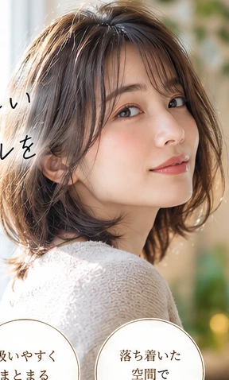
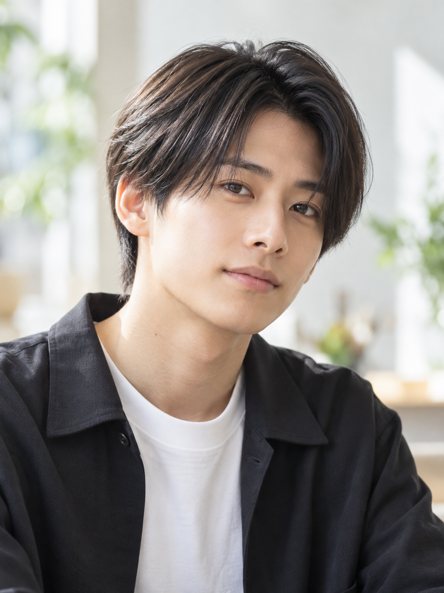

01
当日の状態に合わせた
柔軟なメニュー変更
髪の状態を見て、予定していた施術内容を変更してもらえたという口コミがあります。変更時の丁寧な対応にも言及されています。
口コミ R11722 / R11712なりたい髪型が、まだ曖昧でも。
予約したメニューが、今の髪に合うか迷っていても。
髪の状態と希望を見ながら提案してもらえた――そんなお客様の声が届いています。

当日の髪の状態を確認して施術内容を変更してもらえたという声。髪型を決めきれないまま訪れ、希望を聞きながらスタイルを提案してもらえたという声。YELLOW CORN 金沢文庫店の口コミから、柔軟な対応と対話の姿勢が見えてきます。
広告のためにつくった言葉ではなく、実際の来店体験から。
髪の状態を見て、予定していた施術内容を変更してもらえたという口コミがあります。変更時の丁寧な対応にも言及されています。
口コミ R11722 / R11712髪型を決めずに訪れた方も、希望を聞きながら似合うスタイルを提案してもらえたと語っています。
口コミ R11709 / R11713縮毛矯正後のまとまりや指通り、クセに合わせたカットへの満足が、個別の口コミで語られています。
口コミ R11702 / R11729
髪のうねりや広がりを気にしていたお客様から、縮毛矯正後のまとまりと指通りについての感想が寄せられています。ここで紹介するのは、あくまでその方自身の体験です。
「気になっていた髪のうねりや広がりがしっかり落ち着いて、指通りも良くなりました」お客様の口コミ R11702 より
※掲載写真は生成イメージです。実際の施術例・効果を示すものではありません。
予約時にはツイストパーマを選んでいたお客様が、カウンセリングで髪質や希望する雰囲気を伝え、ニュアンスパーマの提案を受けたという口コミがあります。
必要なのは、完成したイメージを完璧な言葉で伝えることだけではないのかもしれません。
「こちらの希望を聞きながら似合うスタイルを提案していただけたこと」お客様の口コミ R11709 より
曖昧な要望への提案を評価する別の声も寄せられています。
写真はヘアデザインを考えるためのイメージ。実際の施術作品ではありません。
AI生成画像です。店舗の施工実績・実際のスタッフ・店内写真ではありません。
寄せられた口コミの一部を原文から引用しています。
「当日の髪の毛を見ていただいて、施術内容を急遽変更していただきました」
口コミ R11722「急遽メニュー変更しても丁寧に対応していただきました」
口コミ R11712「頭皮や肌への刺激が少なく髪も傷みにくいので気に入っています」
口コミ R11705／個人の感想※個人の感想であり、施術結果・安全性を保証するものではありません。出典：Hot Pepper Beauty 口コミページ ↗
| 店舗名 | イエローコーン 金沢文庫店 （YELLOW CORN） |
| 住所 | 神奈川県横浜市金沢区谷津町352-9 フジビル1F |
| アクセス | 京急 金沢文庫駅から徒歩約5分 |
| 電話番号 | 045-785-8885 |
| 営業時間 | 平日 9:30〜19:00 土日祝 9:30〜18:30 ※施術内容により最終受付時間が異なります。詳細は予約ページをご確認ください。 |
髪の悩みも、まだ言葉にならない理想も。
まずは今の髪から、相談を。